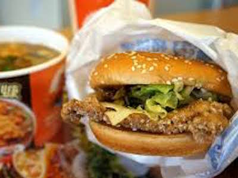

丹丹漢堡
丹丹漢堡並稱作是來高雄必吃的早餐，一開始是走早餐店風格，有東方的麵線羹、廣東粥，配上西方的炸雞、漢堡，還有中西合併的炸地瓜條，新鮮有趣，頗受顧客歡迎。丹丹原是小本生意，後來擴大營運、開設分店，而各家分店老闆彼此之間都有親戚或朋友關係，以方便溝通和獲利，所以就只在南部發展。
丹丹的麵線羹走南部風格、口味偏甜，裡頭的肉羹又嫩又Q。廣東粥專業的加上肉鬆，風味更加分，裡頭有碎絞肉、玉米粒，口味一樣偏甜。香橙鮮蔬雞就是鹹酥雞不加胡椒，而改加柳橙醬汁，吃起來酸酸甜甜的，甜醬汁與炸雞毫無違和，相當美味。最後相當有特色的一味──香酥米糕，是在地人的推薦單品，吃起來也很好吃，它就是把味道偏甜的米糕做成長條狀，炸過定型，讓吃米糕跟吃熱狗一樣方便！
